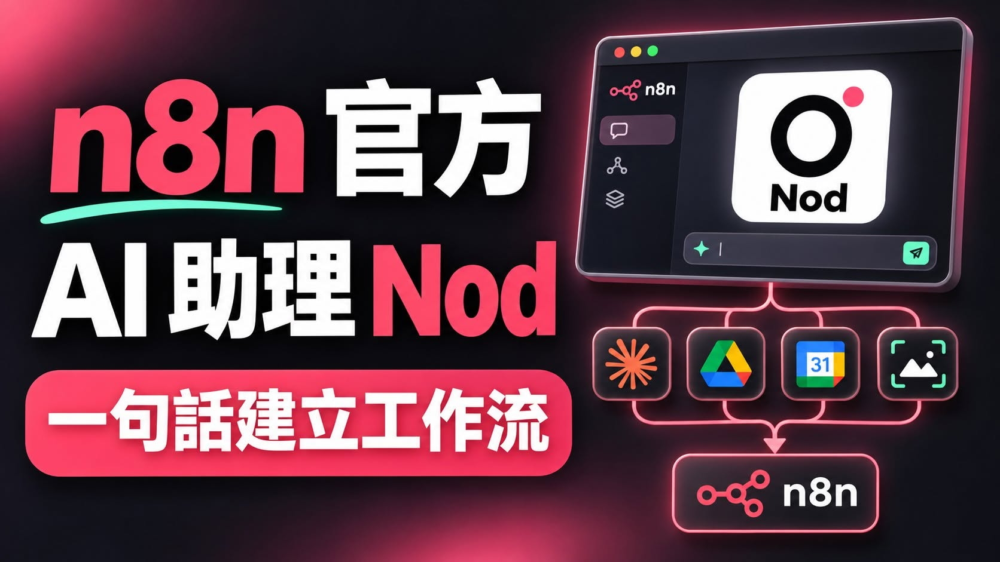

Nod｜n8n 團隊的個人 AI Agent 與自動化：公開教學來源整理
一句話摘要
Nod 是 n8n 團隊開發的獨立個人代理程式；社群分享示範連接資料與 n8n 的工作流程，官方則明列研究預覽、模型費用、資料流及安全邊界。
社群來源與示範範圍

公開社團分享者提及以中文交辦、讀取 Google Drive 名片資料、查看行程、連接 n8n 備份及建立工作流程，並於留言提供教學影片。上述是分享者的示範自述，並非本次實測或所有帳號、版本均可用的保證；影片未觀看，操作細節未核對。
教學影片： https://youtu.be/KYbznGhTqsM
官方文件可核對的重點
- Nod 是 n8n 團隊的獨立應用，不是 n8n 內建 AI Assistant，也不需要先有 n8n；官方將其標為 research preview。
- 官方 README 描述可選模型、應用連線、瀏覽器操作與排程。實際支援及授權須以當前文件、版本和設定為準；公開貼文的個案不證明每個流程必然成功。
- 程式採 Apache 2.0；第三方素材與元件各有條款。官方稱 Nod 本身免費、模型服務由使用者自備並可能另外收費；訂閱、API、第三方服務及運算成本不可視為全免。
- 官方描述檔案、記憶與儲存登入資訊位於執行機器，但任務所需內容會送往選定模型供應商，預設應用連接也可能經 n8n 託管連線服務；本機執行不等於完全離線。
- 官方隱私文件稱使用資料預設開啟、對話追蹤預設關閉；各類資料內容、關閉選項及供應商政策應另查。提供連線前先確認權限、資料類型與撤銷方式。
- 官方描述伺服器檢查應用操作及可改變網頁狀態的步驟，未涵蓋的動作等待批准；判斷仍可能出錯，不能保證所有行為安全。建議以低敏測試資料、最小權限及人工核准高風險動作，並獨立備份。
查核範圍與限制
查核日期 2026-11-18；上游 README 版本固定於 commit 74b36bde306043b5326ff60115264401123c419d，產品及文件可能變動。未安裝、登入、連接帳號或執行 Nod；未觀看影片。公開載入的一張封面已完整檢視，未見個資或憑證，保存公開壓縮版；重用授權未確認，其他未載入媒體數量未知。
社團關於頁標明公開；已讀公開規則包含保護他人個資、禁止侵權等，未見全面禁止外部分享。本文整理概括主題並連回原來源；未檢視圖片不公開。
來源
- 使用者分享網址： https://www.facebook.com/share/p/1Hkgi854xt/?mibextid=wwXIfr
- 貼文 canonical： https://www.facebook.com/groups/n8ngroups/posts/1662856575391937/?mibextid=wwXIfr
- 社團公開規則： https://www.facebook.com/groups/n8ngroups/about/
- 官方 README 固定版本： https://github.com/n8n-io/nod/blob/74b36bde306043b5326ff60115264401123c419d/README.md
- 官方隱私： https://nod.n8n.io/docs/trust/privacy/
- 官方安全及批准： https://nod.n8n.io/docs/trust/approvals/